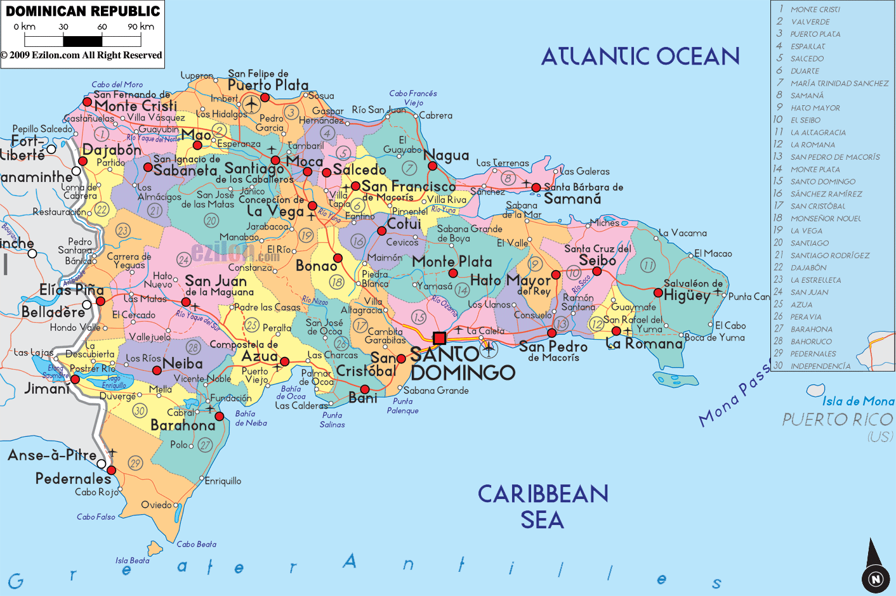

Dominican Republic

- Azua
- Senador: Lia Ynocencia Diaz
- Población: 128,264
- Escudo de brazo:

- Bahoruco
- Senador: Melania Salvador Jimenez
- Población: 111,269
- Escudo de brazo:

- Barahona
- Senador: José Manuel del Castillo Saviñón
- Población: 226,898
- Escudo de brazo:

- Dajabon
- Senador: David Sosa
- Población: 67,887
- Escudo de brazo:

- Duarte
- Senador: Franklin Romero Morillo
- Población: 384,789
- Escudo de brazo:

- El Seibo
- Senador: Santiago Jose Zorrilla
- Población: 115,889
- Escudo de brazo:

- Elias Pina
- Senador: Aris Yván Lorenzo Suero
- Población: 70,589
- Escudo de brazo:

- Espaillat
- Senador: Carlos Gómez
- Población: 390,478
- Escudo de brazo:

- Hato Mayor
- Senador: Cristobal Castillo
- Población: 89,578
- Escudo de brazo:

- Hermanas Mirabal
- Senador: Luis Canaán
- Población: 103,974
- Escudo de brazo:

- Independencia
- Senador: Valentín Medrano
- Población: 54,785
- Escudo de brazo:

- La Altagracia
- Senador: Virgilio Cedano
- Población: 335,677
- Escudo de brazo:

- La Romana
- Senador: Iván Fernández
- Población: 330,587
- Escudo de brazo:

- La Vega
- Senador: Ramón Durán
- Población: 420,478
- Escudo de brazo:

- Maria Trinidad Sanchez
- Senador: Alexis Yeb
- Población: 140,784
- Escudo de brazo:

- Monsenor Nouel
- Senador: Héctor Acosta
- Población: 201,474
- Escudo de brazo:

- Monte Criti
- Senador: Ramón Gómez
- Población: 135,710
- Escudo de brazo:

- Monte Plata
- Senador: Lenin López
- Población: 200,454
- Escudo de brazo:

- Pedernales
- Senador: Dionis Carrasco
- Población: 38,941
- Escudo de brazo:

- Peravia
- Senador: Milcíades Franjul
- Población: 298,747
- Escudo de brazo:

- Puerto Plata
- Senador: Jose Ignacio Paliza
- Población: 329,419
- Escudo de brazo:

- Samana
- Senador: Pedro Catrain
- Población: 108,179
- Escudo de brazo:

- San Cristobal
- Senador:Franklin Rodríguez
- Población: 275,232
- Escudo de brazo:

- San Jose de Ocoa
- Senador:José Antonio Castillo
- Población: 21,148
- Escudo de brazo:

- San Juan
- Senador:Félix Bautista
- Población: 169,032
- Escudo de brazo:

- San Pedro de Macoris
- Senador:Franklin Pena Villalona
- Población: 195,307
- Escudo de brazo:
.svg)
- Sanchez Ramirez
- Senador:Ricardo de los Santos
- Población: 248.807
- Escudo de brazo:

- Santiago
- Senador:Eduardo Estrella
- Población: 1,543,362
- Escudo de brazo:

- Santiago Rodriguez
- Senador:Casimiro Marte
- Población: 57,476
- Escudo de brazo:

- Santo Domingo
- Senador:Antonio Taveras Guzmán
- Población: 1,049,567
- Escudo de brazo:

- Valverde
- Senador:Martín Nolasco Vargas
- Población: 21,026
- Escudo de brazo:

- Distrito Nacional
- Senador: Faride Raful
- Población: 1,484,789
- Escudo de brazo: